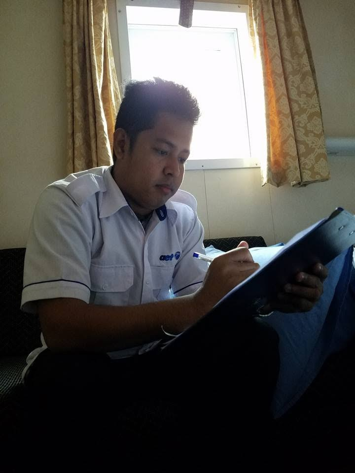
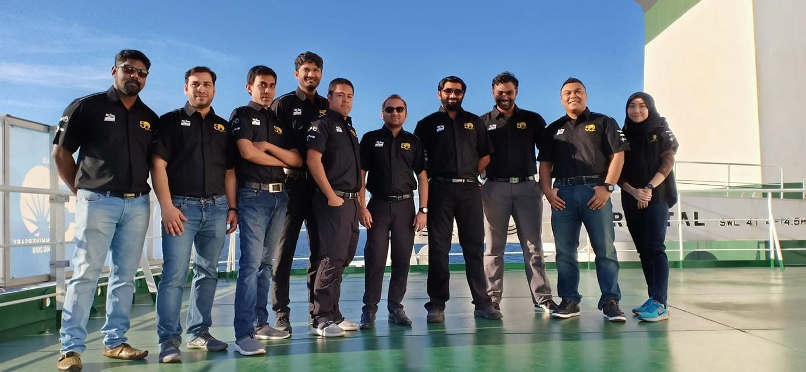
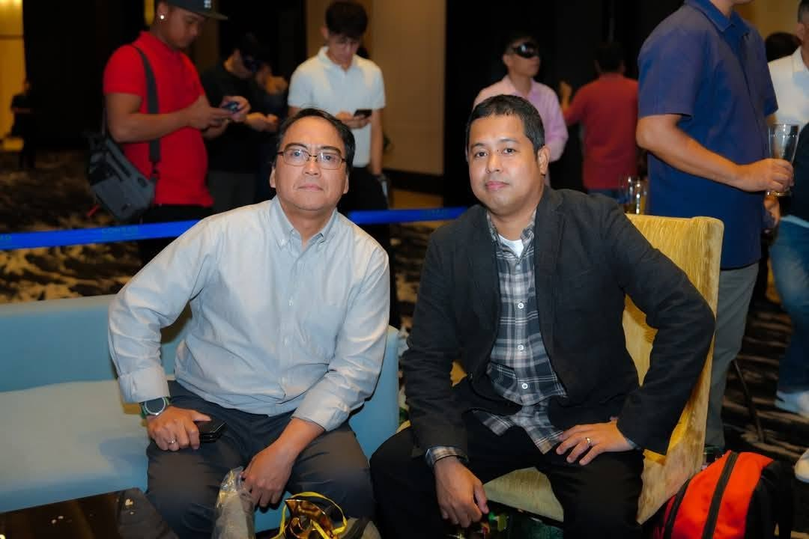
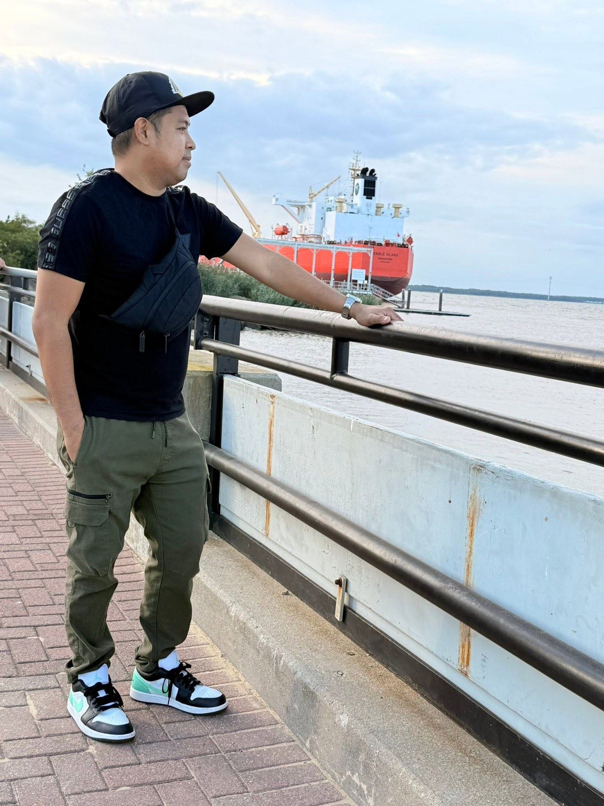
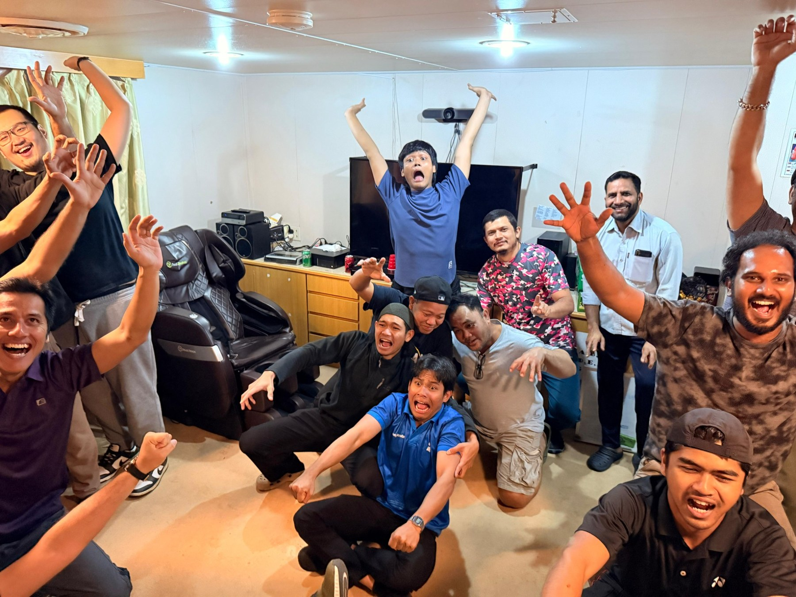

Life at sea and on the road

Shipboard administration and documentation
Life on the bridge

Working alongside an international crew

Professional gatherings and connections

Ports, vessels and time ashore
Working life at sea

Team life onboard

Between voyages
Travel and exploring new places
Caption for photo 1
Caption for photo 2
Caption for photo 3
Caption for photo 4
Caption for photo 5